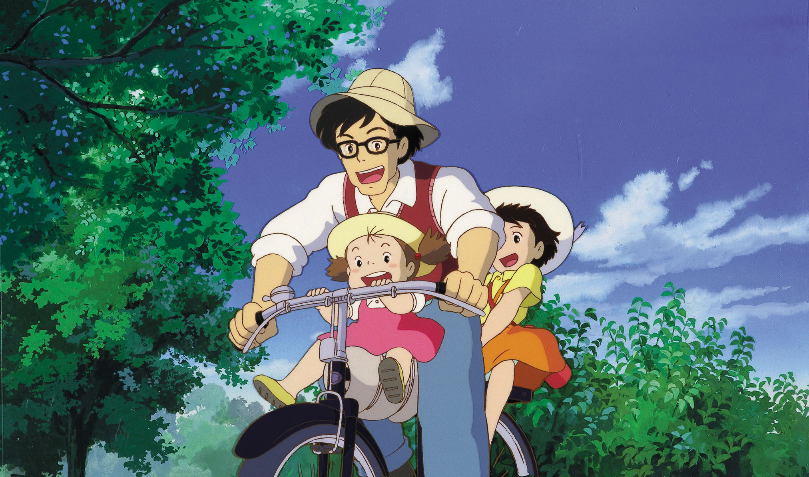
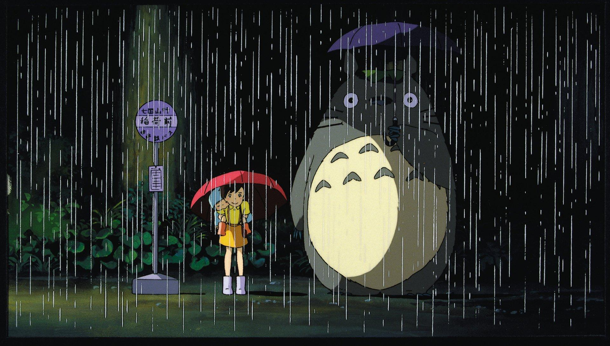

Best Scenes From the Movie My Neighbour Totoro

Best Scenes From the Movie My Neighbour Totoro

Best Scenes From the Movie My Neighbour Totoro

Best Scenes From the Movie My Neighbour Totoro

Best Scenes From the Movie My Neighbour Totoro

Studio Ghibli, a legendary Japanese animation studio, has created numerous beloved characters known for their depth and charm. One of the most iconic is Totoro from "My Neighbor Totoro," a gentle forest spirit who symbolizes the magic of childhood. Chihiro from "Spirited Away" is another fan favorite, showcasing her growth from a timid girl to a courageous heroine in a mystical world. These characters, along with many others, highlight Studio Ghibli's talent for crafting emotionally resonant and timeless stories.
| Year | Title | award | category |
|---|---|---|---|
| 1989 | my neighbour totoro | Kinema Junpo Awards | Kinema Junpo Award Best Film |
| 1989 | my neighbour totoro | Kinema Junpo Awards | Readers' Choice Award Best Japanese Film |
| 1989 | my neighbour totoro | Mainichi Film Awards | Best Film |